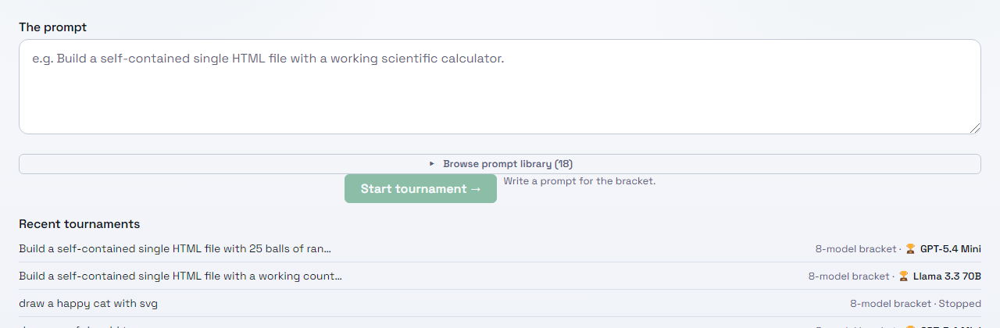
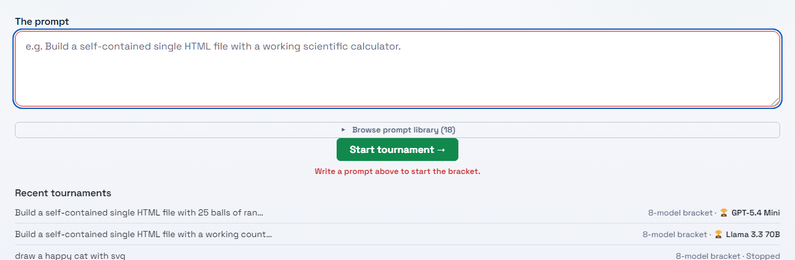

2026-10-13. The button was disabled because the prompt box was empty. Captured at 1280px, light theme.
Before: disabled, reason off to the side

The button could not be clicked, and the only explanation was a muted caption to its right.After: click lands in the prompt box

Start stays pressable. With no prompt, pressing it focuses the prompt box, marks it, and the hint under the button turns red. The button also no longer blanks out on hover.